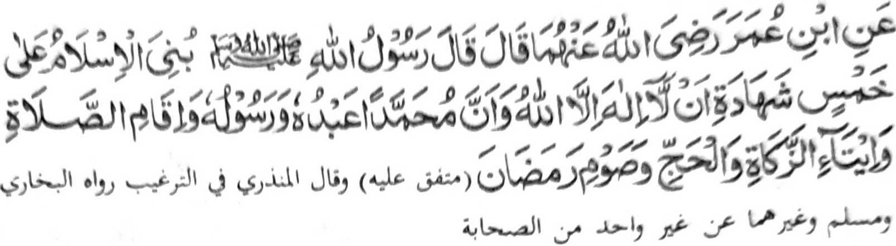
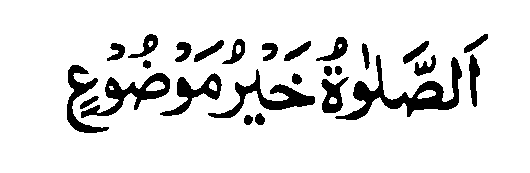

Dowa a pinto-an a madadalem si-i. So paganay ron na so ”Gona o Sambayang", go aya kia dowa na so 'Tapa-os ago Pangangalek” a bagi-an o manga tao a miyagak sa Sambayang.

Miyaka thitayan ko Ibn Omar (Radhiallaho ’Anho) a pitharo o Rasulollah (Sallallaho 'Alaihi Wasallam), "Piyanagombalay so Islam ko lima: So kazaksi-i sa daden a tohan inonta bo so Allah go mata-an a so Mohammad (Sallallaho Alaihi Wasallam) na oripen Iyan go sogo Iyan, go so kipamayandegen ko Sambayang, go so kibegan ko Zakat, go so Hajj, go so kaphowasa ko Ramadhan"
So Rasulollah (Sallallaho 'Alaihi Wasallam) na ini ibarat iyan so Islam sa bala-balay a matotokod a lima pola-os So Kalimah i pola-os sa lo-ok, na so ped a pola-os na si-i ko manga rogo niyan a pat. O mada so pola-os sa lo-ok na di phakatindeg, na o mada so isa ko pat a pola-os ko apiya anda rogo na khigobar sangkoto a rogo. Imanto na kokomen tano so manga ginawa tano o anda taman i kapaka-titindega tano sangka iya bala-balay o Islam. Ino ba aden a isa bo a pola-os a maka thitikena ko darpa iyan?
Giyangkanan a lima pola-os a miya aloy sangka iya Hadith na mitotoro iyan so piphaporoan a paliyogat ko Muslim. Benar ka di mipen-darainon o Muslim so isa kiran bo ogaid na so Sambayang ko Islam na aya darepa iyan na tomotondog ko Iman. So Abdullah Ibn Mas-od (Radhiallaho 'Anho) na pitharo iyan: "Miyaka isa na iniza-an aken so Rasulollah (Sallallaho Alaihi Wasallam) o antona-ay amaal (o tao) a pekhababaya-an o Allah. Inisembag o Nabi (Sallallaho ’Alaihi Wasallam), 'So Sambayang'. Ini-iza akenon peman o antona-a 'amaal a makatotondogon na inisembag o Nabi (Sallallaho 'Alaihi Wasallam), 'So kipangaling-gagaon ko dowa lokes'. Iniza-an ko peman o antonaai makatotondogon na pitharo iyan 'So Jihad'.
So Mulla Ali Qari (Rahmatollahi 'Alaihi) na miya aloy niyan angka iya Hadith a inibabid iyan ko paratiyaya sa so Sambayang i piphaporo-an a paliyogat o Agama ko oriyan o Iman. Miya bager pena-i o isa a Hadith, a miya-aloy ron a miyatharo o Rasulollah (Sallallaho 'Alaihi Wasallam),

"So Sambayang i aya makalelebi ko manga paliyogat o Allah."